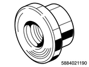

Rear axle assembly (drum brake) disassembly (All models)
1. Rear axle shaft removal
1. Remove the bearing holder from the axle case.
Note
- Remove the fixing nut.
2. Remove the rear axle shaft from the axle case.
Note
- Remove the axle shaft together with the back plate.
- When pulling out the axle shaft, the axle case oil seal will be damaged. Replace with a new one.
2. Rear axle shaft disassembly
1. Remove the snap ring from the rear axle shaft.
Note
- Use snap ring pliers when removing.
- Do not reuse the snap ring.
2. Remove the shim from the rear axle shaft.
Note
- If any shims are installed, remove them.
3. Remove the retainer from the rear axle shaft.
Note
- Use a grinder to grind the retainer or sensor rotor surface and remove the retainer or sensor rotor using a chisel.
3. Double taper roller bearing removal
1. Remove the bearing from the rear axle shaft using special tool.
Note
- Fasten an axle shaft bearing remover to the bearing holder with 4 nuts.
SST: 5-8840-2831-0 - axle shaft bearing remover
- Axle shaft bearing remover
Note
- Remove the double taper roller bearing, oil seal, bearing holder and back plate from the axle shaft using a press.
- Do not reuse the rear axle differential oil, double taper roller bearing, snap ring, retainer, or sensor rotor.

- Press fitting
- Bearing remover
- Retainer or sensor rotor
- Double taper roller bearing
- Back plate
- Oil seal
- Axle shaft
2. Remove the hub outer oil seal from the bearing holder.
Note
- Remove the oil seal from the bearing holder.
3. Remove the bearing outer race from the bearing holder.
Note
- If the bearing outer race cannot be removed by hand, use the special tool for removal.

SST: 5-8840-2119-0 - installer: inner bearing

SST: 5-8840-0007-0 - grip
- Installer
- Grip
4. Wheel pin removal
1. Remove the wheel pin from the rear axle shaft using special tool.
Note
- Remove using a wheel pin remover.
SST: 5-8840-0079-0 - wheel pin remover
- Wheel pin remover
2. Remove the oil catcher from the rear axle shaft.

- Rear axle shaft
- Oil catcher
5. Axle case oil seal removal
1. Remove the axle case oil seal from the rear axle case.
Note
- Do not reuse the oil seal.
6. Rear differential assembly removal
1. Remove the rear differential assembly from the rear axle case.
Note
- Remove the differential fixing bolt and nut to remove the rear differential assembly.